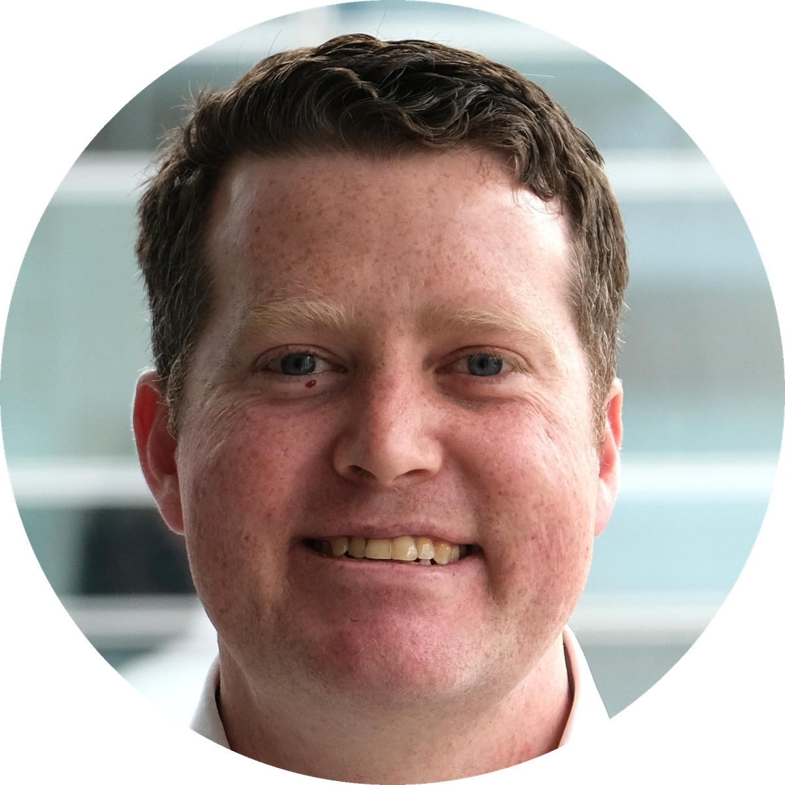

Leading cyber intelligence that empowers customers to defend themselves in the cyber domain. Passionate about developing high-performing, diverse teams and leveraging intelligence for real impact.
Led a regulatory intelligence team through major change — Machinery of Government changes and a functional review — using tactical empathy, clear communication and acknowledging the team's experience while highlighting the vision.
Developed a business case and implemented an automation solution for a high-volume repetitive task, saving the team up to 8 hours a day.
Completed a full review of Data, Intelligence & Analytics products, improving the look, utility and recognisability of reporting and strengthening organisational impact.
Contributed to a new model for intelligence responses to major incidents in NSW, implemented the concept and trained intelligence analysts across the force in the MIIG model.
Improved reporting capacity of the Public Place Shooting Database and developed a Power BI dashboard for easy access to shooting-related conflict data.
Comprehensive understanding of the role and application of intelligence in regulation — contemporary regulatory models, strategic/operational/tactical considerations, public value, organisational culture, and the impact of intelligence on regulator efficiency and foresight.
A practical six-module online programme providing a common foundation of current, modern regulatory practice for regulators across Australia, plus a series of six supporting seminars.
SQL syntax, aggregate functions, advanced string and comparison queries, logical operators, JOINs, constraints and database design, with Python integration for advanced skills.
Practical automation — web scraping, parsing PDFs and Excel spreadsheets, automating the keyboard and mouse, and sending emails and texts.